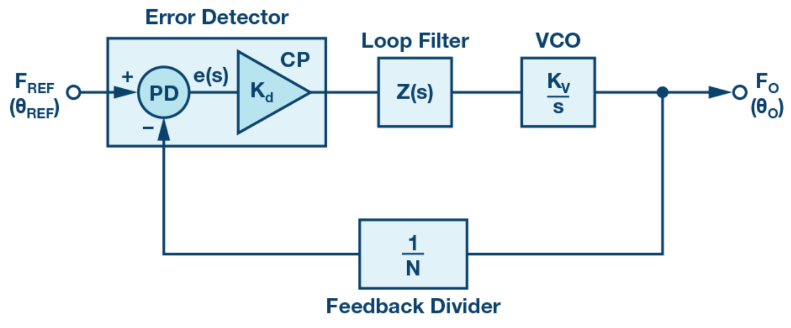

Sony IMX219 MIPI CSI-2 传感器驱动开发笔记
文档概述
本文档记录 Sony IMX219 相机传感器驱动的架构设计、工作流程、与 RK3588 ISP 管线的集成方式，以及 BSP 相机驱动调试中常遇到的问题和解决方法。
驱动源码：drivers/media/i2c/imx219-dt.c
DTS overlay：linux-6.1/arch/arm64/boot/dts/rockchip/overlays/rock-5b-radxa-camera-8m-219.dts
一、驱动架构总览
1.1 驱动在 Linux 内核中的位置
1
2
3
4
5
6
7
8
9
10
11
12
13
| Userspace (gstreamer / v4l2-ctl / rkaiq)
|
[ISP tuning: librkaiq.so + iqfile] ← 3A 算法库，负责 AE/AWB/LSC/CCM
|
rkisp0 (RK3588 ISP) ← debayer、降噪、3A 统计
|
rkcif (capture interface) ← DMA buffer 管理
|
mipi2_csi2 (CSI-2 host controller) ← MIPI 协议层 / virtual channel
|
csi2_dphy0 (D-PHY) ← 物理层，lane 配置
|
[IMX219 sensor] ← 本驱动的管理对象
|
1.2 数据结构层次
1
2
3
4
5
6
7
8
9
10
11
12
13
14
15
16
17
18
19
20
21
22
23
24
25
26
27
28
29
30
31
32
33
34
| struct imx219 {
/* ---- V4L2 框架接口 ---- */
struct v4l2_subdev sd; /* V4L2 子设备核心 */
struct media_pad pad; /* media 框架 pad，用于构建 pipeline */
/* ---- 硬件资源 ---- */
struct clk *xclk; /* 外部时钟 (XVCLK, 24MHz) */
u32 xclk_freq;
/* ---- V4L2 控制框架 ---- */
struct v4l2_ctrl_handler ctrl_handler; /* 控件管理器 */
struct v4l2_ctrl *exposure; /* 曝光时间 (行数, 用于手动 AE) */
struct v4l2_ctrl *analogue_gain; /* 模拟增益 (寄存器 0x0157) */
struct v4l2_ctrl *digital_gain; /* 数字增益 (寄存器 0x0158) */
struct v4l2_ctrl *vblank; /* 垂直消隐行数 (控制帧率) */
struct v4l2_ctrl *hblank; /* 水平消隐像素数 */
struct v4l2_ctrl *hflip; /* 水平翻转 (0=正常, 1=镜像) */
struct v4l2_ctrl *vflip; /* 垂直翻转 (0=正常, 1=倒置) */
struct v4l2_ctrl *pixel_rate; /* 像素时钟频率 (只读, 由模式决定) */
struct v4l2_ctrl *link_freq; /* MIPI lane 频率 (只读, 用于链路配置) */
struct v4l2_ctrl *test_pattern; /* 测试图案 (0=关闭, 用于调试 MIPI 链路) */
/* ---- 运行状态 ---- */
const struct imx219_mode *mode; /* 当前工作模式 (分辨率+帧率组合) */
u32 cfg_num; /* 支持的模式数量 (enum_frame_size 边界检查) */
struct v4l2_rect crop; /* 当前裁剪窗口 (selection API, set_fmt 时更新) */
struct v4l2_mbus_framefmt fmt; /* 当前媒体总线格式 (code/width/height/field) */
u16 cur_vts; /* 当前 VTS 垂直总行数 (vblank 改变时同步更新) */
bool streaming; /* 是否正在输出视频流 */
unsigned int power_count; /* 电源引用计数 (pm_runtime_get/put 使用) */
/* ---- 同步 ---- */
struct mutex lock;
};
|
二、支持的模式与寄存器表
2.1 四种分辨率模式
| 模式 |
分辨率 |
帧率 |
实现方式 |
VTS |
| 0 |
3280×2464 |
~21fps |
全分辨率读出 |
0x09C4 |
| 1 |
1920×1080 |
30fps |
中央 crop 裁切 |
0x06E6 |
| 2 |
1640×1232 |
30fps |
全图 2×2 binning |
0x06E3 |
| 3 |
640×480 |
~90fps |
crop 1280×960 + 内部数字降采样 |
0x0437 |
2.2 寄存器表的作用与使用时机
作用： 每个模式对应一张完整的寄存器表，将 sensor 从任意状态一次性地配置到目标参数——包括 PLL 时钟、帧率 VTS/HTS、crop 窗口、输出尺寸、binning/sub-sampling 以及画质相关的未公开寄存器。寄存器表不依赖”先手动切到某个已知状态再增量修改”，而是覆盖式写入，保证每次模式切换后的 sensor 状态都是确定且一致的。
使用时机（被调用两次）：
imx219_start_streaming() — 每次启动视频流时写入整张寄存器表。这是最核心的使用场景：用户通过 s_fmt 切换分辨率后、下次 s_stream(1) 时，驱动一次性下发新模式的所有寄存器。
切回 standby 后再次 start — 如果调用 s_stream(0) 进入 standby 再 s_stream(1) 恢复，寄存器表会重新写入。这是因为 sensor 的 SRAM 寄存器在长时间 standby 或电源波动后可能已丢失，重写保证可靠性。
注意：imx219_set_ctrl()（曝光、增益、翻转等）的增量修改 不会 触发整张寄存器表重写，只写对应的单/少量寄存器。模式切换（s_fmt ACTIVE）也仅仅是更新 imx219->mode 指针，不立即写寄存器，推迟到下一次 s_stream(1) 生效。
每张寄存器表的内容结构：
1
2
3
4
5
6
7
8
9
10
11
12
13
14
15
16
17
18
19
20
21
22
23
24
25
26
27
| [1] 时钟更新序列
0x30eb: 0x05 → 0x0c → 0x05 → 0x09
[2] FRM_LENGTH/LINE_LENGTH 扩展使能 (0x300a/b → 0xff)
[3] MIPI D-PHY 配置
0x0114: lane 模式 (2-lane)
0x0128: D-PHY 自动时序
0x012a/b: 外部时钟 24MHz
[4] VTS / HTS 帧率控制 (0x0160~0x0163)
[5] Crop 窗口 (0x0164~0x016b)
[6] 输出尺寸 (0x016c~0x016f)
[7] Binning/Sub-sampling 配置 (0x0170~0x0175, 0x0176/7)
[8] PLL 倍频配置 (0x0301~0x030d)
公式: VCO = 24MHz × (VT_MPY) / (VT_PRE_DIV)
pixel_clk = VCO / VT_DIV / VT_POST_DIV
[9] 画质寄存器 (Sony 未公开，参考值)
0x455e / 0x471e / 0x4767 / 0x4750 / 0x4540 / 0x47b4
以及列 ADC 校正系列 0x4713 / 0x478b / 0x478f / 0x4793 / 0x4797 / 0x479b
[10] 方向寄存器 0x0172
|
2.3 link_freq 与 pixel_rate 的概念与关系
这是 sensor 驱动中最基础也最容易混淆的两个 V4L2 Control（均为只读），它们描述了 sensor 输出给 SoC 的数据速率。
2.3.1 概念定义
| Control |
含义 |
控制 ID |
pixel_rate |
sensor 输出像素的等效时钟频率（单位为 Hz），即 sensor 每秒钟向外输出的像素个数 |
V4L2_CID_PIXEL_RATE |
link_freq |
单条 MIPI data lane 上的符号速率（单位 Hz），即 D-PHY 的 HS 模式工作频率 |
V4L2_CID_LINK_FREQ |
为什么需要这两个 Control？
- ISP / CSI 接收端通过
link_freq 配置 D-PHY 的 HS 接收时钟分频比，确保 MIPI 物理层能正确采样。
- 用户空间（或 ISP 驱动）通过
pixel_rate 计算数据吞吐量，在多个 sensor 同时工作时做带宽分配与帧率校验。
2.3.2 核心公式
1
2
3
4
5
6
7
8
9
10
| pixel_rate = VCO / (VT_DIV × VT_POST_DIV) ①
link_freq = VCO / (VT_DIV × FLL_POST_DIV) ②
其中:
- VCO = XVCLK (24MHz) × PLL_MULT / PLL_PRE_DIV
- PLL_MULT ↳ reg 0x0304, 0x0305 (VT_MPY)
- PLL_PRE_DIV ↳ reg 0x0301 (VT_PRE_DIV, 1/2/4)
- VT_DIV ↳ reg 0x0302
- VT_POST_DIV ↳ reg 0x0303
- FLL_POST_DIV ↳ reg 0x0306, 0x0307
|
2.3.3 IMX219 实际数值（以 mode 0 为例）
取寄存器表中的 PLL 配置计算实际值：
1
2
3
4
5
6
7
8
9
10
|
PLL_PRE_DIV = 1
VT_MPY = 76
VT_DIV = 5
VT_POST_DIV = 2
FLL_POST_DIV = 2
VCO = 24MHz × 76 / 1 = 1824 MHz
pixel_rate = 1824 / (5 × 2) = 182.4 MHz
link_freq = 1824 / (5 × 2) = 456 MHz
|
验证：link_freq 为 456 MHz，而 D-PHY HS 模式下每条 lane 的速率等同 link_freq，因此：
1
2
3
4
5
| MIPI 总带宽 = link_freq × 2 × data_lanes
= 456 MHz × 2 × 2 // ×2 是因为 DDR 双边沿采样
= 1824 Mbps ≈ 228 MB/s
3280 × 2464 × 10bit × 21fps ≈ 212 MB/s < 228 MB/s → 够用
|
2.3.4 驱动中的注册方式
1
2
3
4
5
6
7
8
9
10
11
12
13
14
15
16
17
18
19
20
|
static const s64 imx219_link_freq_menu[] = {
456000000,
};
imx219->pixel_rate = v4l2_ctrl_new_std(
&imx219->ctrl_handler, &imx219_ctrl_ops,
V4L2_CID_PIXEL_RATE,
182400000, 182400000, 1,
182400000
);
imx219->link_freq = v4l2_ctrl_new_int_menu(
&imx219->ctrl_handler, &imx219_ctrl_ops,
V4L2_CID_LINK_FREQ,
ARRAY_SIZE(imx219_link_freq_menu) - 1,
0,
imx219_link_freq_menu
);
|
2.3.5 两者的关系与分工
1
2
3
4
5
6
7
8
9
10
11
12
13
14
15
16
17
| ┌─────────┐
│ IMX219 │
│ sensor │
└────┬────┘
│ MIPI D-PHY 2-lane, HS=456MHz/lane
▼
┌───────────────────┐
│ RK3588 D-PHY RX │ ← 需要 link_freq 配置接收分频
└────────┬──────────┘
│ 并行像素总线, 182.4 MHz
▼
┌───────────────────┐
│ CSI-2 Controller │ ← 需要 pixel_rate 做带宽分配
└────────┬──────────┘
│
▼
ISP / DMA
|
| 维度 |
pixel_rate |
link_freq |
| 物理含义 |
sensor 输出像素的时钟 |
MIPI lane 的符号速率 |
| 寄存器来源 |
VCO / (VT_DIV × VT_POST_DIV) |
VCO / (VT_DIV × FLL_POST_DIV) |
| IMX219 典型值 |
182.4 MHz |
456 MHz |
| 使用者 |
ISP/capture 端做带宽分配 |
D-PHY driver 配置 HS 接收时钟 |
| 用户态可见 |
v4l2-ctl -d ... --get-ctrl pixel_rate |
v4l2-ctl -d ... --get-ctrl link_freq |
2.3.6 常见误解
误解 1：link_freq = pixel_rate × 2
不对。IMX219 中 link_freq / pixel_rate = 456 / 182.4 = 2.5，而不是 2。两者由 VT_PLL 和 OP_PLL 两路独立 PLL 各自产生，没有固定的比例关系。不同 sensor 甚至同一 sensor 的不同模式都可能不同。
误解 2：pixel_rate 就是 MIPI 时钟
不对。MIPI 的 HS 时钟等于 link_freq，由 OP_PLL 产生。pixel_rate 由 VT_PLL 产生，决定 HTS/VTS/帧率。两路 PLL 完全独立，互不干扰。
误解 3：切换模式后这两个值会变
当前 IMX219 驱动把 pixel_rate 和 link_freq 设为固定值（min = max），所有模式共用同一个值。如果某天加入 4-lane 模式或不同 PLL 配置，这两个 Control 的 range 需要随模式更新。
2.4 PLL(锁相环) 倍频分频配置详解
面试高频题：给你 sensor datasheet 和 24MHz 外部晶振，要输出 1080p@30fps 2-lane MIPI，怎么配 PLL 寄存器？推导出 pixel_rate 和 link_freq。
2.4.1 锁相环基本结构
PLL（Phase-Locked Loop，锁相环）是一种通过反馈环路将输入参考时钟倍频/分频为高精度、低抖动的输出时钟的硬件电路。在 image sensor 里，PLL 是”一颗心脏“——外部只给一个廉价低频晶振，内部几十上百 MHz 的时钟全靠它生成。

一个通用 PLL 由四个基本模块组成：
| 模块 |
英文 |
作用 |
| 鉴频鉴相器 |
PFD (Phase-Frequency Detector) |
比较参考频率和反馈信号的相位差，输出 UP/DOWN 脉冲 |
| 低通环路滤波器 |
Loop Filter |
将 PFD 脉冲平滑为直流控制电压，抑制高频噪声 |
| 压控振荡器 |
VCO (Voltage-Controlled Oscillator) |
电压控制振荡器，输入控制电压，输出目标频率。频率随电压单调变化 |
| 反馈分频器 (÷N) |
Feedback Divider |
将 VCO 输出 ÷N 后送回 PFD，形成闭环 |
PLL 的锁定过程
- 上电初始：VCO 输出频率偏离目标，PFD 检测到相位差，输出 UP/DOWN 脉冲
- 环路滤波：Loop Filter 将脉冲转化为平滑电压，缓慢推/拉 VCO 频率
- 趋近锁定：经过若干周期后，反馈信号与参考信号相位差趋近于零——locked
- 维持锁定：锁定后 PLL 持续微调，抵抗温度/电压波动
通用公式：
$$
f_{VCO} = f_{in} \times \frac{N}{R} \quad \text{（R = 输入参考分频，N = 反馈分频）}
$$
$$
f_{out} = \frac{f_{VCO}}{P} = f_{in} \times \frac{N}{R \times P}
$$
IMX219 的 PLL 独特之处
IMX219 内部有 两路完全独立的 PLL（PLL1 和 PLL2），从同一个 INCK 分出，各自拥有独立的预分频器、倍频器和后分频器：
PLL1（VT 路径） 和 PLL2（OP 路径），各自独立，互不干扰。
- PLL1：
INCK → PreDiv1 → VT_MPY → VCO1 → VTPXCK_DIV / VTSYCK_DIV → 生成像素时钟和系统时钟
- PLL2：
INCK → PreDiv2 → OP_MPY → VCO2 → OPPXCK_DIV / OPSYCK_DIV → 生成输出时钟和 MIPI 时钟
两路 PLL 各自拥有独立的倍频系数和分频链。这意味着：调整像素时钟不会牵连 MIPI 时钟，反之亦然。
为什么要配 PLL
IMX219 外部只接一个 24MHz 晶振（INCK），但 sensor 内部不同模块需要不同频率：
- 像素阵列读出需要 ∼182 MHz 的像素时钟（
VTPXCK_DIV 控制）
- MIPI D-PHY 需要 ∼456 MHz 的 HS 时钟（
OPPXCK_DIV 控制）
- 内部控制单元需要系统时钟（
VTSYCK_DIV 控制）
- FIFO 和输出链路需要输出时钟（
OPSYCK_DIV 控制）
PLL 就是负责把 24MHz「预分频→倍频→后分频」变成这些频率的硬件模块。
2.4.2 IMX219 PLL 框图
1
2
3
4
5
6
7
8
9
10
11
12
13
14
15
16
17
18
19
20
21
22
23
24
25
26
27
28
29
30
31
32
33
34
35
36
37
| INCK (24MHz)
│
┌────────────────────┼────────────────────┐
│ │ │
▼ │ ▼
┌──────────┐ │ ┌──────────┐
│ PreDiv1 │ │ │ PreDiv2 │
│0x0304 │ │ │0x0305 │
│÷1/2/3 │ │ │÷1/2/3 │
└────┬─────┘ │ └────┬─────┘
│ │ │
▼ │ ▼
┌──────────┐ │ ┌──────────┐
│ PLL1 │ │ │ PLL2 │
│ VT_MPY │ │ │ OP_MPY │
│0x0306/07 │ │ │0x030C/0x030D
│11-bit │ │ │11-bit │
└────┬─────┘ │ └────┬─────┘
│ │ │
VCO1 │ VCO2
(~912 MHz │ (~3648 MHz
典型值) │ 典型值)
│ │ │
▼ │ ▼
┌──────────┐ │ ┌──────────┐
│ DIV1 │ │ │ DIV2 │
└────┬─────┘ │ └────┬─────┘
│ │ │
┌──────┴──────┐ │ ┌──────┴──────┐
│ │ │ │ │
▼ ▼ │ ▼ ▼
0x0301:VTPXCK 0x0303:VTSYCK │ 0x0309:OPPXCK 0x030B:OPSYCK
÷4/5/8/10 ÷1/2 │ ÷8/10 ÷1/2
│ │ │ │ │
▼ ▼ │ ▼ ▼
像素时钟_K 系统时钟 │ 输出时钟_K mipi时钟_K
(ADC/Pipeline) (控制单元) │ (FIFO) (MIPI D-PHY)
|
注意：两路 PLL 共用同一个外部时钟源 INCK（24MHz 晶振），但 PreDiv1/PreDiv2、VCO、倍频系数、后分频链完全独立。INCK 频率本身由 0x012A/B（EXCK_FREQ）配置。
2.4.2.1 什么是 PLL1 和 PLL2
| PLL |
全称 |
职责 |
输出 |
| PLL1 |
VT PLL（Vertical Timing PLL） |
驱动像素阵列行扫描、ADC 采样、Pipeline 节拍 |
像素时钟（VTPXCK_DIV 输出） |
| PLL2 |
OP PLL（Output PLL） |
驱动 FIFO 写入和 MIPI D-PHY 串行输出 |
输出时钟（OPPXCK_DIV）和 MIPI 时钟（OPSYCK_DIV） |
- VT = Vertical Timing：像素阵列按行扫描读出，PLL1 生成的就是驱动这条扫描流水线的时钟。
- OP = Output：职责单纯，把像素数据通过 MIPI 发出去。
2.4.2.2 为什么 DIV1 有两级输出
DIV1 从 VCO1 分出两条后分频路径：
1
2
| VCO1 ──→ VTPXCK_DIV (0x0301) ──→ 像素时钟_K
──→ VTSYCK_DIV (0x0303) ──→ 系统时钟
|
| 分频级 |
寄存器 |
可选值 |
作用 |
VTPXCK_DIV |
0x0301 |
4, 5, 8, 10 |
把 VCO1 拉到像素阵列能接受的频率（通常 100–200 MHz） |
VTSYCK_DIV |
0x0303 |
1, 2 |
给控制单元提供系统时钟，频率比像素时钟更低 |
同理 DIV2 也从 VCO2 分出两条：
1
2
| VCO2 ──→ OPPXCK_DIV (0x0309) ──→ 输出时钟_K → FIFO
──→ OPSYCK_DIV (0x030B) ──→ mipi时钟_K → MIPI D-PHY
|
| 分频级 |
寄存器 |
可选值 |
作用 |
OPPXCK_DIV |
0x0309 |
8, 10 |
输出像素时钟，决定 MIPI lane rate |
OPSYCK_DIV |
0x030B |
1, 2 |
MIPI 系统时钟，通常和 lane rate 相关 |
核心公式：
1
2
| pixel_rate = INCK / PreDiv1 × VT_MPY / VTPXCK_DIV
link_freq = INCK / PreDiv2 × OP_MPY / OPPXCK_DIV
|
两路 PLL 完全独立，pixel_rate 和 link_freq 没有固定比例。
2.4.3 寄存器逐一拆解
IMX219 的时钟寄存器集中在 0x0300~0x030B 区域，按 INCK → 预分频 → 倍频 → 后分频的顺序排列。注意：PreDiv1 和 PreDiv2 可以设为不同值，但在大多数驱动实现中两者配置相同。
① INCK 输入频率配置
1
2
3
4
5
|
imx219_write_reg(0x012A, 0x09);
imx219_write_reg(0x012B, 0x60);
|
这一步决定 INCK 频率，PLL 后续所有计算都基于这个值。
② PLL1（VT 路径）寄存器
1
2
3
4
5
6
7
8
9
10
11
12
13
14
15
16
17
18
19
20
21
22
23
|
imx219_write_reg(0x0304, 0x03);
imx219_write_reg(0x0306, 0x00);
imx219_write_reg(0x0307, 0x72);
imx219_write_reg(0x0301, 0x05);
imx219_write_reg(0x0303, 0x01);
|
③ PLL2（OP 路径）寄存器
1
2
3
4
5
6
7
8
9
10
11
12
13
14
15
16
17
18
19
20
21
22
|
imx219_write_reg(0x0305, 0x03);
imx219_write_reg(0x030C, 0x01);
imx219_write_reg(0x030D, 0xC8);
imx219_write_reg(0x0309, 0x08);
imx219_write_reg(0x030B, 0x01);
|
寄存器速查表
| 寄存器 |
所属路径 |
作用 |
可选值 |
| 0x012A/B |
INCK |
外部时钟频率 |
任意（单位 0.01 MHz） |
| 0x0304 |
PLL1 |
PreDiv1 预分频 |
1, 2, 3 |
| 0x0305 |
PLL2 |
PreDiv2 预分频 |
1, 2, 3 |
| 0x0306/7 |
PLL1 |
VT_MPY 倍频 |
11-bit |
| 0x030C/0x030D |
PLL2 |
OP_MPY 倍频 |
11-bit |
| 0x0301 |
PLL1 |
VTPXCK_DIV 像素后分频 |
4, 5, 8, 10 |
| 0x0303 |
PLL1 |
VTSYCK_DIV 系统后分频 |
1, 2 |
| 0x0309 |
PLL2 |
OPPXCK_DIV 输出后分频 |
8, 10 |
| 0x030B |
PLL2 |
OPSYCK_DIV MIPI 系统后分频 |
1, 2 |
核心公式：
1
2
| pixel_rate = INCK / PreDiv1 × VT_MPY / VTPXCK_DIV
link_freq = INCK / PreDiv2 × OP_MPY / OPPXCK_DIV
|
两路 PLL 完全独立，各自闭环。
2.4.4 面试推导模板（给定需求 → 反推 PLL）
题目： 外部 24MHz 晶振，输出 3280×2464@21fps，2-lane MIPI，PLL 怎么配？
1
2
3
4
5
6
7
8
9
10
11
12
13
14
15
16
17
18
19
20
21
22
23
24
25
26
27
| ① 算 MIPI 总带宽（MAC 层）:
bandwidth = 3280 × 2464 × 10bit × 21fps × 1.2 (overhead)
≈ 2.03 Gbps
② 推 link_freq → 决定 OP_PLL:
link_freq ≥ MAC带宽 / (2 × data_lanes) // ×2 = DDR
≥ 2030 / (2 × 2) = 507.5 MHz
查 sensor datasheet → 456 MHz 已能满足 21fps
→ link_freq = 456 MHz
→ 选 OPPXCK_DIV = 8（从 8/10 中选一个能整除的）
→ VCO2 = link_freq × OPPXCK_DIV = 456 × 8 = 3648 MHz
→ 选 PreDiv2 = 3，则 PLL2 输入 = 24/3 = 8 MHz
→ OP_MPY = VCO2 / 8 = 3648 / 8 = 456
→ 写寄存器: 0x0305=0x03, 0x030C/0x030D=0x01C8, 0x0309=0x08
③ 推 pixel_rate → 决定 VT_PLL:
pixel_rate = HTS × VTS × fps = 3448 × 2524 × 21 ≈ 182.4 MHz
（HTS/VTS 从 datasheet 或 mode 表获取）
→ 选 VTPXCK_DIV = 5（从 4/5/8/10 中选）
→ VCO1 = pixel_rate × VTPXCK_DIV = 182.4 × 5 = 912 MHz
→ 选 PreDiv1 = 3，则 PLL1 输入 = 8 MHz
→ VT_MPY = VCO1 / 8 = 912 / 8 = 114
→ 写寄存器: 0x0304=0x03, 0x0306/7=0x0072, 0x0301=0x05
④ 校验:
OP_PLL: link_freq = 24/3 × 456 / 8 = 8 × 57 = 456 MHz ✓
VT_PLL: pixel_rate = 24/3 × 114 / 5 = 8 × 22.8 = 182.4 MHz ✓
|
面试要点：两步推导完全独立——先用 MIPI 带宽定 OP_PLL（OP_MPY + OPPXCK_DIV），再用像素时序定 VT_PLL（VT_MPY + VTPXCK_DIV）。各自闭环。能准确说出寄存器地址（0x0304/5/6/7/0x030C/0x030D 等）和可选分频值（VTPXCK_DIV 取 4/5/8/10，OPPXCK_DIV 取 8/10）是加分项。pixel_rate 和 link_freq 没有固定比例，因为它们来自两路完全独立的 PLL。
典型题：”24MHz 晶振出 1080p@30fps，PLL 怎么配？””pixel_rate 和 link_freq 什么关系？””为什么两者之比不是整数？”
加分项：能画出 PLL1（VT_MPY → VTPXCK_DIV/VTSYCK_DIV）和 PLL2（OP_MPY → OPPXCK_DIV/OPSYCK_DIV）两路独立框图；准确说出 0x0304/0x0305 是两路预分频、0x0306/7 和 0x030C/0x030D 是两路 11-bit 倍频系数、0x0301/0x0309 是两路后分频；知道通过 v4l2-ctl --get-ctrl pixel_rate/link_freq 验证配置；能解释”为什么 pixel_rate 和 link_freq 没有固定比例”——因为它们是两路独立 PLL 各自产生的
三、关键工作流程
以下按实际应用调用时序排列：驱动加载 → 格式协商 → 参数设置 → 启停流。
3.1 Probe 初始化流程
v4l2-ctl / media-ctl / 应用程序 open 设备前，驱动加载时执行。
1
2
3
4
5
6
7
8
9
10
11
12
13
14
15
16
17
18
19
20
21
22
23
24
25
26
27
28
| imx219_probe(client)
│
├─ devm_kzalloc() 分配 imx219 结构体
├─ v4l2_i2c_subdev_init() 绑定 subdev ops + i2c client
├─ devm_clk_get() 获取外部时钟
├─ clk_get_rate() 校验 24MHz
├─ imx219_power_on() XVCLK 使能
├─ imx219_identify_module() 读 CHIP_ID (0x0000) 校验 0x0219
├─ imx219->mode = &supported_modes[0] 默认 3280×2464
├─ toggle MODE_SELECT (0x01→0x00) 初始化 MIPI D-PHY LP-11
├─ imx219_init_controls() 注册 V4L2 controls
│ ├─ pixel_rate (182.4M, RO)
│ ├─ link_freq (456M, RO)
│ ├─ vblank (4~VTS_MAX-height)
│ ├─ hblank (read-only)
│ ├─ exposure (1~vts-4)
│ ├─ analogue_gain (0~232)
│ ├─ digital_gain (256~4095)
│ ├─ hflip / vflip (0~1, MODIFY_LAYOUT)
│ └─ test_pattern (enum menu)
├─ sd.internal_ops = imx219_internal_ops open 时初始化 try_fmt/try_crop
├─ sd.flags |= HAS_DEVNODE | HAS_EVENTS
├─ sd.entity.function = MEDIA_ENT_F_CAM_SENSOR
├─ pad.flags = MEDIA_PAD_FL_SOURCE
├─ imx219_set_default_format() 初始 fmt = 3280×2464 RGGB10
├─ media_entity_pads_init() media 框架注册单 pad
├─ v4l2_async_register_subdev_sensor() 异步注册：等待 CSI 接收端绑定
└─ pm_runtime_set_active/enable/idle()
|
3.2 格式协商流程
media-ctl --set-v4l2 或被 s_stream(1) 之前调用。此阶段不写传感器寄存器，只更新软件状态。真正的寄存器写入推迟到 3.4 streaming 启动时。
1
2
3
4
5
6
7
8
9
10
| imx219_set_pad_format(fmt)
├── 校验 code 是否在 codes[] 内
├── imx219_get_format_code() 根据 hflip/vflip 映射 Bayer 顺序
├── v4l2_find_nearest_size() 找最接近的分辨率
├── TRY 模式: 仅写 per-fh state（不影响硬件）
└── ACTIVE 模式: 更新 imx219->fmt + imx219->mode
└── 联动更新 control ranges:
├── vblank: min=4, max=VTS_MAX-height, def=mode->vts_def - height
├── exposure: max = mode->vts_def - 4
└── hblank: = PPL_DEFAULT - width (固定值)
|
3.3 Control 写入流程
s_fmt 之后、s_stream(1) 之前或 streaming 期间均可调用。非 streaming 时仅更新值不写寄存器。
1
2
3
4
5
6
7
8
9
10
11
12
13
| imx219_set_ctrl(ctrl)
│
├─ VBLANK 变化 → 联动更新 exposure max range
│
├─ pm_runtime_get_if_in_use() 仅在 streaming 时操作硬件寄存器
│ ├─ ANALOGUE_GAIN → reg 0x0157
│ ├─ DIGITAL_GAIN → reg 0x0158 (16bit, 高/低字节分别写)
│ ├─ EXPOSURE → reg 0x015A (16bit)
│ ├─ TEST_PATTERN → reg 0x0600 (value mapping table)
│ ├─ HFLIP / VFLIP → reg 0x0172 (bit0/bit1 组合写入)
│ └─ VBLANK → reg 0x0160 (VTS = height + vblank, 16bit)
│
└─ pm_runtime_put()
|
3.4 Streaming 启停流程
最终一步：s_stream(1) 才真正上电并写入整张寄存器表。
1
2
3
4
5
6
7
8
9
10
11
12
13
14
15
| imx219_set_stream(enable=1)
└─ imx219_start_streaming()
├─ pm_runtime_resume_and_get() → imx219_power_on() 使能 XVCLK
├─ imx219_write_regs(mode_regs) 写入当前模式的整张寄存器表
├─ __v4l2_ctrl_handler_setup() 应用 exposure/gain/flip/test_pattern
├─ imx219_write(MODE_SELECT, 0x01) 启动图像输出
├─ __v4l2_ctrl_grab(vflip, true) 锁定 flip（streaming 期间禁改）
└─ __v4l2_ctrl_grab(hflip, true)
imx219_set_stream(enable=0)
└─ imx219_stop_streaming()
├─ imx219_write(MODE_SELECT, 0x00) 进入 standby
├─ __v4l2_ctrl_grab(vflip, false) 解锁 flip
├─ __v4l2_ctrl_grab(hflip, false)
└─ pm_runtime_put() → imx219_power_off() 关闭 XVCLK
|
3.5 Bayer 排列与翻转联动
1
2
3
4
5
6
7
8
9
| 传感器物理 Bayer: RGGB (line0: R,G,R,G... line1: G,B,G,B...)
hflip=0, vflip=0 → MEDIA_BUS_FMT_SRGGB10_1X10
hflip=1, vflip=0 → MEDIA_BUS_FMT_SGRBG10_1X10
hflip=0, vflip=1 → MEDIA_BUS_FMT_SGBRG10_1X10
hflip=1, vflip=1 → MEDIA_BUS_FMT_SBGGR10_1X10
实现: 设置 hflip/vflip 时标记 MODIFY_LAYOUT flag，
ISP 通过 get_fmt 获取修正后的 code 做正确的 debayer。
|
3.6 电源管理架构
1
2
3
4
5
6
7
8
9
10
11
12
| pm_runtime 状态机:
SUSPENDED ←→ ACTIVE
imx219_power_on() → clk_prepare_enable(xclk)
imx219_power_off() → clk_disable_unprepare(xclk)
系统休眠/唤醒:
imx219_suspend() → 正在 streaming 则先 stop
imx219_resume() → 休眠前 streaming 则 recovery
注: 本驱动无独立 regulator/reset GPIO 控制，
上电和 XCLR 由硬件（camera_pwdn_gpio regulator-fixed）自动管理
|
四、DTS Overlay 关键配置
4.1 数据通路拓扑
1
2
3
4
5
6
7
8
9
10
11
12
13
14
15
16
17
18
19
| IMX219 (I2C addr 0x10, sony,imx219)
port → data-lanes = <1 2>
↓ endpoint: imx219_out0
csi2_dphy0 (D-PHY)
port@0 → mipidphy0_in_ucam1 (reg=2)
port@1 → csidphy0_out
↓
mipi2_csi2 (CSI-2 controller)
port@0 → mipi2_csi2_input
port@1 → mipi2_csi2_output
↓
rkcif_mipi_lvds2 (capture interface)
→ cif_mipi2_in0
↓
rkcif_mipi_lvds2_sditf
→ mipi_lvds2_sditf
↓
rkisp0_vir0 (ISP virtual channel 0)
→ isp0_vir0 (最终的 ISP 处理节点)
|
4.2 关键属性
1
2
3
4
5
| compatible = "sony,imx219";
reg = <0x10>;
clocks = <&clk_cam_24m>;
rockchip,camera-module-name = "RADXA-CAMERA-8M";
data-lanes = <1 2>;
|
五、Camera 传感器驱动调试常见问题
5.1 “No sensor found” / probe 失败
现象： dmesg 中看到 chip id mismatch 或 i2c 通信错误。
排查步骤：
1
2
3
4
5
6
7
8
9
10
11
12
13
14
| 1. i2c detect 确认设备存在:
i2cdetect -y <bus_num>
应看到 0x10 处有设备 (UU 表示被驱动占用)
2. 检查供电:
cat /sys/kernel/debug/regulator/regulator_summary | grep -i cam
3. 检查 XVCLK:
cat /sys/kernel/debug/clk/clk_summary | grep cam
4. 最简测试 - 直接读 CHIP_ID:
i2ctransfer -y <bus> w2@0x10 0x00 0x00 r1
i2ctransfer -y <bus> w2@0x10 0x00 0x01 r1
应该返回 0x02 0x19
|
常见原因：
- 供电未使能（regulator 没有
regulator-always-on）
- XVCLK 频率不对（IMX219 必须是 24MHz）
- MIPI D-PHY 初始化失败（上电后没有 toggle MODE_SELECT）
- I2C 总线冲突（地址被其他设备占用）
- 硬件复位 XCLR 被拉低
5.2 Streaming 无图像输出 / 黑屏
现象： 驱动 probe 成功，v4l2-ctl --stream-mmap 无输出或全黑帧。
排查步骤：
1
2
3
4
5
6
7
8
9
10
11
12
13
14
15
16
17
18
| 1. 确认 pipeline 链路全部 link up:
media-ctl -p -d /dev/media0
2. 确认 sensor 有 streaming 状态:
cat /sys/kernel/debug/v4l2-async/ (检查 subdev 绑定状态)
3. 用测试图案隔离问题:
v4l2-ctl -d /dev/v4l-subdevX -c test_pattern=2
# 如果出彩条 → sensor register 配置正常，但光学通路有问题
# 如果不出 → 寄存器表本身有问题
4. 确认 MIPI lane 配置:
- data-lanes = <1 2> 在 DTS 中是否正确
- 传感器和 D-PHY 端口的 lane 映射是否一致
5. 示波器测量:
- MIPI LP-11 状态是否建立
- Clock lane 和 Data lane 是否有 HS 切换波形
|
常见原因：
- 上电时序不对（XCLR 和供电的上电顺序必须满足 datasheet 要求）
- MIPI 寄存器没写对（lane 模式寄存器 0x0114 与实际 data-lanes 不匹配）
- PLL 配置错误（VTS/HTS/PLL 倍频系数导致时钟超出 D-PHY 能力）
- 寄存器表缺少画质相关配置（Sony 未公开寄存器没写）
- D-PHY 没有正确初始化 LP-11
5.3 画面颜色异常（偏绿/偏红/偏色）
现象： 有图像但颜色明显不对，例如画面中心偏绿、四周偏红。
根因分析：
这是 ISP tuning 问题，不是 BSP 驱动问题。BSP 驱动只需保证 raw Bayer 数据输出正确即可。
1
2
3
4
5
| 检查是否为驱动问题的方法:
v4l2-ctl -d /dev/v4l-subdevX -c test_pattern=2
↓
如果彩条颜色正确 → 驱动没问题，是 ISP 端
如果彩条颜色也错 → 驱动的 Bayer 格式码或翻转映射有问题
|
ISP 端排查：
1
2
3
4
5
6
7
8
9
10
11
12
| 1. 确认驱动是否正确注册了 media bus code:
grep "fmt" /sys/class/video4linux/v4l-subdev*/format
2. 确认 iqfile 是否存在且匹配:
ls /etc/iqfiles/
cat /etc/iqfiles/*.json | grep module|grep 8M # 找匹配的 module name
3. 确认 DTS 中 rockchip,camera-module-name 与 iqfiles 中的名一致
4. 如果驱动缺少 RKMODULE_GET_MODULE_INFO ioctl:
→ ISP 库无法自动加载 iqfile → 使用默认 tuning → 颜色异常
→ 需要在驱动中补上 Rockchip 私有 ioctl
|
BSP 驱动端保证：
- Bayer 排列码（
MEDIA_BUS_FMT_SRGGB10_1X10 等）与传感器物理排列一致
- hflip/vflip 联动 Bayer 顺序修正正确
- 像素深度（10bit）与输出格式一致
5.4 帧丢失 / DMA overflow
现象： dmesg 中看到 rdk_dma 或 rkcif overflow 错误。
排查步骤：
1
2
3
4
5
6
7
8
| 1. 检查 MIPI 频率:
cat /sys/class/video4linux/v4l-subdev*/ctrls | grep link_freq
2. 确认 D-PHY 分频:
media-ctl 查看 link_freq 是否正确传给 D-PHY driver
3. 检查 system memory bandwidth:
cat /sys/kernel/debug/clk/clk_summary | grep -E "ddr|npu|isp"
|
常见原因：
- PLL 配置使 MIPI clock 超过 D-PHY 支持的最大速率
- DDR 带宽不足（同时使用 USB3、NVMe 等高带宽设备）
- CSI-2 virtual channel ID 冲突
- RK3588 需要关注：rkcif 的 MMU 未启用 (
&rkcif_mmu { status = "okay"; })
5.5 帧率不对 / 实际帧率远低于预期
现象： 拉流帧率只有标称的 1/2 或更低。
排查：
1
2
3
4
5
6
7
8
9
10
11
12
13
14
15
16
| 实际帧率 = pixel_clk / (HTS × VTS)
其中:
- HTS (水平总像素) = LINE_LENGTH registers (0x0162/0x0163)
- VTS (垂直总行数) = FRM_LENGTH registers (0x0160/0x0161)
查寄存器:
echo "reg 0x0160 0x0161 0x0162 0x0163" → 手动计算
常见原因:
- VTS 设置过大（PLL 配置没放大到目标频率）
- 2-lane 模式下 bandwidth 不够 → 降低帧率
MIPI bandwidth = link_freq × 2 × lanes
456MHz × 2 × 2 = 1824 Mbps ≈ 228 MB/s
3280×2464×10bit×21fps ≈ 212 MB/s → OK
如果需要 30fps → 3280×2464×10×30 ≈ 303 MB/s → 2-lane 不够
|
5.6 I2C 通信不稳定 / 偶发性失败
现象： streaming 过程中偶尔 I2C 错误。
排查：
1
2
3
4
5
6
7
8
9
10
11
12
13
| 1. 检查 I2C 总线速率:
通常 100kHz 或 400kHz，不要超 datasheet 限制
2. 用示波器检查波形质量:
- 上升/下降沿是否干净
- ACK 是否正常
3. 检查是否与其他 I2C 设备共总线:
imx219 通常在 i2c3，检查 DTS 是否有其他设备在同一个 bus
4. 寄存器写入方式:
IMX219 使用 16bit 寄存器地址，不能直接用 smbus API
必须用 i2c_transfer 拆成 2+1 字节消息
|
5.7 系统唤醒后 sensor 不工作
现象： suspend/resume 后 sensor 无法恢复 streaming。
排查：
1
2
3
4
5
6
7
8
| 1. 确认驱动正确实现了 suspend/resume:
→ imx219-dt.c 实现了 SET_SYSTEM_SLEEP_PM_OPS
→ suspend 时停止 streaming、resume 时恢复
2. 恢复失败的可能原因:
- 硬件复位 XCLR 在唤醒后被拉低 → 需要 regulator-fixed 配置 always-on
- XVCLK 在唤醒后没有自动恢复 → 检查 clock driver
- 传感器寄存器在掉电后丢失 → 需要重新写整张寄存器表
|
六、调试工具速查
| 工具 |
用途 |
示例 |
media-ctl -p |
打印 media pipeline 拓扑 |
确认所有 entity 和 link 状态 |
v4l2-ctl -d /dev/v4l-subdevX --all |
查看 subdev 所有 controls 和 format |
验证 sensor 配置 |
v4l2-ctl --list-formats-out |
查看 ISP 输出支持的格式 |
确认 debayer 后格式 |
i2cdetect -y <bus> |
I2C 总线扫描 |
验证 sensor 是否在线 |
i2ctransfer |
原始 I2C 读写 |
调试寄存器级问题 |
v4l2-compliance |
V4L2 兼容性测试 |
检查驱动是否符合 V4L2 规范 |
dmesg | grep -iE "imx219|rkisp|rkcif|mipi" |
内核日志过滤 |
快速定位问题模块 |
cat /sys/kernel/debug/gpio |
查看 GPIO 状态 |
确认 XCLR / PWDN pin 电平 |
七、驱动修改记录
| 特性 |
原 imx219.c |
本 imx219-dt.c |
| regulator 控制 |
独立管理 AVDD/DOVDD/DVDD |
移除，由硬件 GPIO 统一控制 |
| reset GPIO |
独立 XCLR 控制 |
移除 |
| Rockchip 私有 ioctl |
有 RKMODULE_GET_MODULE_INFO |
无（待补） |
| 模式数量 |
更多 |
4 个核心模式 |
| 寄存器表注释 |
较少 |
每行均有中文注释说明功能 |
| 代码风格 |
Rockchip BSP 扩展 |
精简内核主线风格 |